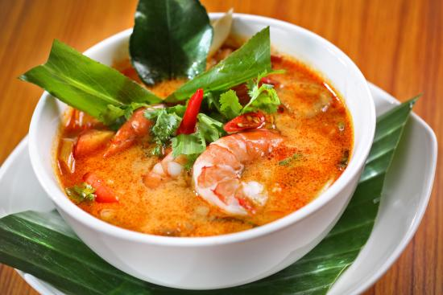
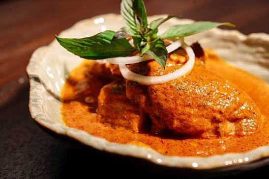

<!DOCTYPE html>
<html lang="th"><head><meta charset="UTF-8"><meta name="viewport" content="width=device-width,initial-scale=1.0"><title>อาหารภูเก็ต | Phuket Travel Guide"><style>
*{box-sizing:border-box}body{margin:0;font-family:Arial,"Noto Sans Thai",sans-serif;background:#e9faff;color:#17405a}nav{display:flex;justify-content:center;flex-wrap:wrap;background:#087ea4;position:sticky;top:0;z-index:10}nav a{color:#fff;text-decoration:none;padding:15px 20px;font-weight:700}nav a:hover,nav a.active{background:#00a9d6}.hero{height:300px;background:linear-gradient(#0005,#0005),url('tom-yum-kung.jpg') center/cover;display:grid;place-items:center;color:#fff;text-align:center}.hero h1{font-size:clamp(2rem,5vw,4rem)}main{max-width:1200px;margin:auto;padding:40px 20px}.grid{display:grid;grid-template-columns:repeat(2,1fr);gap:30px}.card{background:#fff;border-radius:16px;overflow:hidden;box-shadow:0 8px 25px #087ea422;transition:.25s}.card:hover{transform:translateY(-6px)}.card img{width:100%;height:260px;object-fit:cover}.card section{padding:18px}.card h2{color:#087ea4;margin-top:0}footer{background:#063b5c;color:#fff;text-align:center;padding:25px;margin-top:30px}@media(max-width:750px){.grid{grid-template-columns:1fr}}
</style></head><body>
<nav><a href="index.html">หน้าแรก</a><a href="teepak.html">แนะนำที่พัก</a><a class="active" href="food.html">อาหาร</a><a href="places.html">สถานที่ท่องเที่ยว</a><a href="Contact.html">ติดต่อเรา</a></nav>
<section class="hero"><h1>อาหารน่าลองในภูเก็ต</h1></section>
<main><h1>Traditional Food</h1><div class="grid">
<article class="card"><section><h2>ผัดไทย</h2><p>เส้นผัดกับไข่ เต้าหู้ ถั่วงอก และถั่วลิสง เป็นเมนูไทยที่รู้จักกันทั่วโลก</p></section></article>
<article class="card"><section><h2>ต้มยำกุ้ง</h2><p>ต้มยำรสเปรี้ยวเผ็ดหอมสมุนไพรและกุ้ง เป็นเมนูที่เหมาะกับคนชอบรสจัด</p></section></article>
<article class="card"><section><h2>ข้าวเหนียวมะม่วง</h2><p>ข้าวเหนียวมูนกับมะม่วงสุกและกะทิ เมนูของหวานยอดนิยม</p></section></article>
<article class="card"><section><h2>มัสมั่น</h2><p>แกงรสกลมกล่อม มีมันฝรั่ง ถั่วลิสง และเครื่องเทศหอม ๆ</p></section></article>
<article class="card"><section><h2>ส้มตำ</h2><p>ส้มตำมะละกอรสเปรี้ยวเผ็ด สดกรอบ และปรับระดับความเผ็ดได้ตามชอบ</p></section></article>
</div></main><footer>Phuket Travel Guide • เว็บไซต์โปรเจกต์สาขาเทคโนโลยีสารสนเทศ</footer></body></html>
